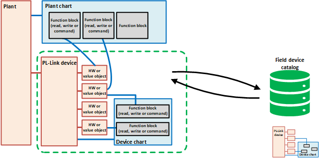

UP258D12
对于PL-Link 设备集成，实现了所谓的设备图表。 PL-Link 设备可以拥有这样的设备图表，支持例如具有以下特点：
- Assign the BACnet objects of the PL-Link device to the read, write and command function blocks in the device chart.
- The BACnet objects of the PL-Link device are already pre-assigned to the read, write and command function blocks in the device chart.
- Store the PL-Link device with its own device chart in the library.
- The PL-Link device can store some internal programming logic, typically used by room operator units, where an additional programming logic is used to get the room operator units running without programming every time.
- Copy the PL-Link device with its own device chart from the library.
- The device chart is automatically assigned and owned by the PL-Link device.
下图显示了现场设备目录中带有图表的设备。

有关 PL-Link Tools 工程工作流程的总体说明，请参阅“KNX PL-Link 工程工作流程”一章。
QMX integration workflow
接下来的章节将详细描述设备图表的编程逻辑、相关的编程模式以及与工厂图表的交互。
有关基于 QMX3.P74 的设备图表示例，请参阅“设备图表示例 QMX3.P74”一章。
Example of the device chart QMX3.P74